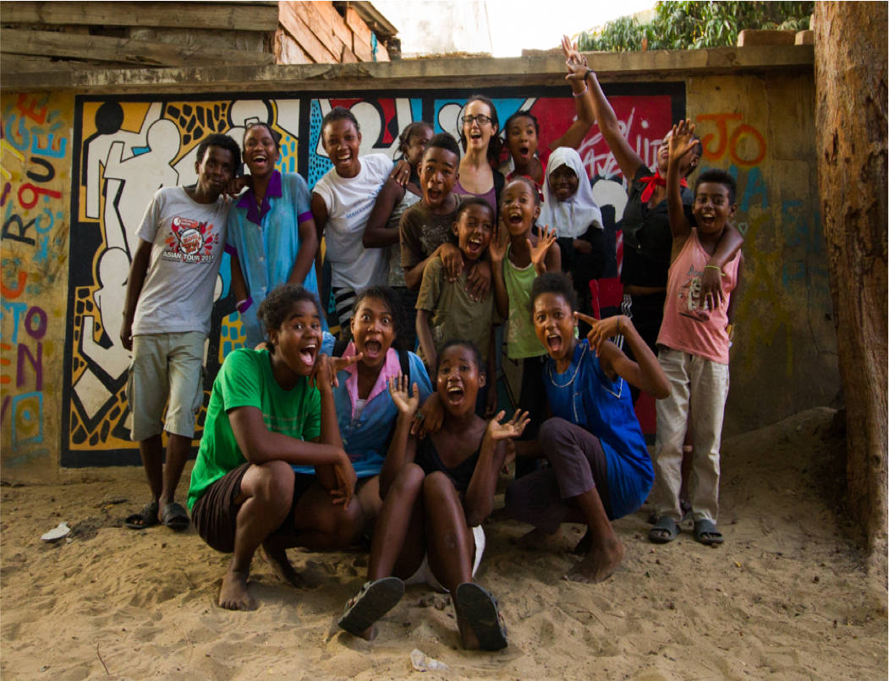
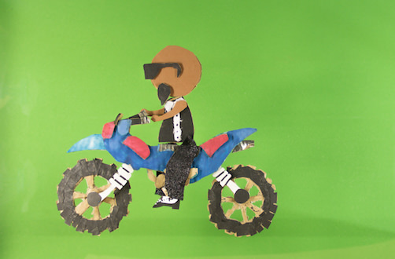

Atelier itinérant de cinéma d'animation
Nous voyageons en proposant un atelier itinérant de cinéma d’animation qui s’inscrit dans le soutien d’une cause sociale.
Nous accompagnons un groupe de jeunes enfants, adolescents et/ou adultes pendant plusieurs semaines dans la réalisation collective d’un cout-métrage d’animation à partir d’un thème, d’un conte ou d’une histoire, choisie ou écrite ensemble.
En privilégiant l’utilisation de la pédagogie active, chacun est alors amené à participer aux différentes étapes de la conception d’un petit dessin-animé telles que la création et l’animation des personnages et des décors, mais aussi l’enregistrement des différents dialogues et bruitages.
Nos objectifsLes premiers objectifs de l’atelier sont non seulement d’offrir aux participants une activité innovante mais aussi un nouveau moyen d’expression permettant de valoriser leurs compétences et leur culture. Sur base de réflexions collectives, l’atelier et les courts-métrages créés permettent également d’aborder de façon ludique des problématiques parfois délicates et à poser un regard sur un aspect de leur quotidien.
L’atelier s’ouvre aussi à la participation et à la formation d’accompagnants et stagiaires locaux qui sont encouragés à reproduire l’atelier de façon autonome.
La technique
La technique privilégiée est celle du papier découpé animé en « stop-motion » à l’aide d’un appareil photo. C’est une technique d’animation simple qui consiste à photographier image par image les personnages et les décors préalablement dessinés et découpés.
À chaque prise de vue, les participants déplacent légèrement les personnages et le défilement de cette suite de photos à une cadence rapide (12 images par seconde) crée l’illusion du mouvement grâce à la persistance rétinienne.
Voir la fabrication du film Safidin'i PelaQui sommes-nous ?
En se rencontrant à Liège, nous avons François et moi, décidé de se lancer dans un projet à Madagascar en combinant nos passions communes pour l'éducation, le développement local et le cinéma d'animation. En 2015, ce projet de neuf mois nous a permis de parcourir la grande île rouge de Majunga à Tuléar en passant par Antananarivo en s'arrêtant à Fianarantsoa. Au fil de nos nombreuses rencontres nous avons eu l'opportunité de mettre en place des ateliers avec des jeunes de Tuléar.
Elena Cabedo Garcia
Licenciée en pédagogie à l’Université de Grenade (Espagne) et en science de la population et du développement à l’Université de Liège (Belgique), Elena s’est formée à la fabrication de film d’animation en 2014. Elena se charge de la gestion et de la coordination du projet, de l’encadrement des participants, de l’enregistrement et du mixage des prises de sons.
François Chenot
Gradué en techniques infographiques à la Haute Ecole Rennequin Sualem Seraing (Belgique), François s’est spécialisé dans le cinéma d’animation en travaillant en tant qu’animateur et technicien sur des séries et long-métrages d’animation en Belgique et au Luxembourg. François se charge du montage et de l’encadrement des participants sur l’animation.